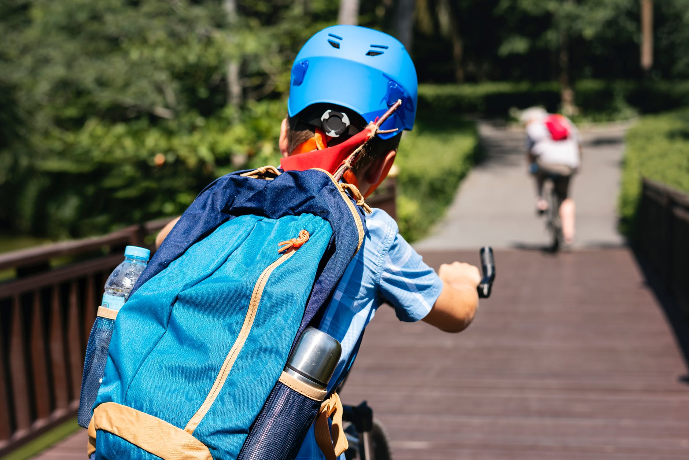

Exercises
Cycling
Regular cycling can reduce the risk of chronic illnesses such as heart disease, type 2 diabetes and strokes. It can also boost your mood and keep your weight under control. Children are advised to do at least 60 minutes of moderate to vigorous intensity activity every day. A 30-minute ride will count towards your recommended weekly activity target.
Football

Here are some of the best soccer skills for 8 year olds (and similar ages) and also some beginner soccer
drills for kids that will help kids playing soccer develop at a fast rate!
Skipping
Skipping is a great way to increase your motor skills and spacial awareness. It's also great fitness and really gets your body moving. Practise this with your at home or in the playground.